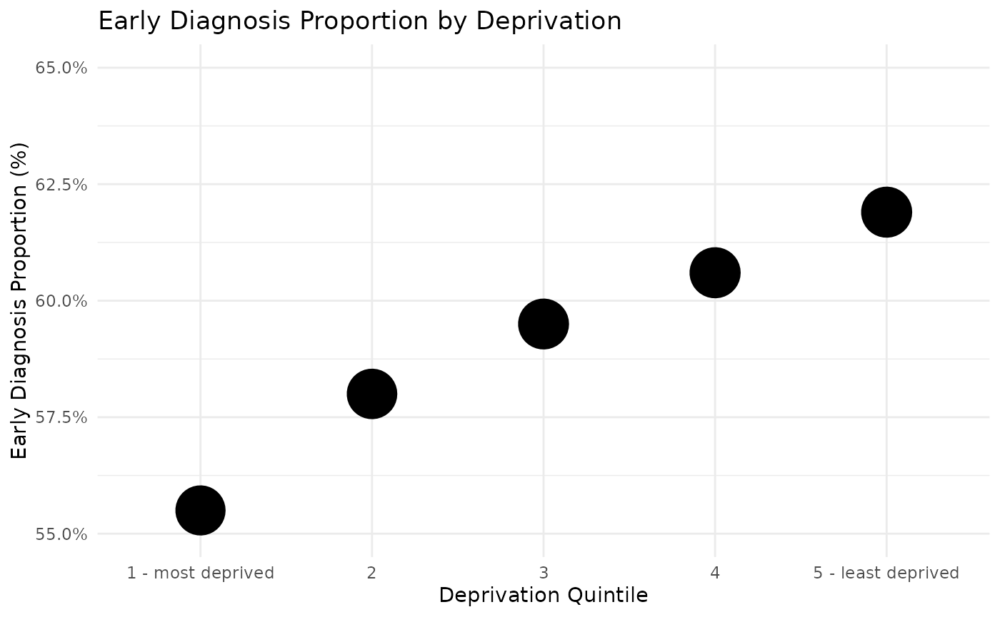
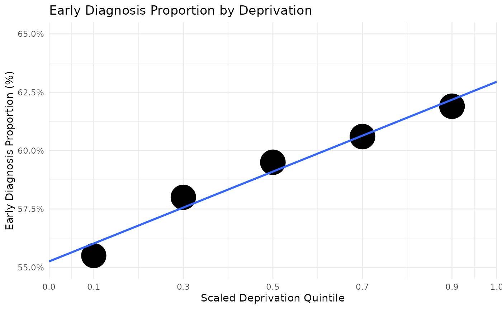

How we measure the Deprivation Gap
Calculating the Slope Index of Inequality
explain-SII.RmdIntroduction
This write-up describes how the metric Deprivation gap in early cancer diagnosis is derived for the NHS Oversight Framework.
NHS England » NHS Oversight Framework 2026/27
To make sure we’re all on the same page, here’s some working definitions for what we’re talking about.
Early cancer diagnosis
The proportion of cancers diagnosed at stage 1 and 2 out of all cancers diagnosed at stages 1 to 4, observed over a 12-month period.
Deprivation
Uses Index of Multiple Deprivation (IMD) quintiles from 1 to 5, representing the most deprived to least deprived areas in groups of 20%. These quintiles are derived nationally, which makes it possible to compare across geographies, but may mean some groups are over/under-represented in different areas.
Deprivation Gap
The difference in early diagnosis proportion between those in the most and least deprived groups. That is, a measure of the relationship between deprivation and the early diagnosis of cancer.
Slope Index of Inequality
An SII is an absolute measure of inequality that represents the difference in predicted values of an indicator between the most advantaged and most disadvantaged subgroups, obtained by fitting a regression model, or line of best fit. It is a standard method of measuring inequality in public health, used by both Public Health England (PHE) and the World Health Organisation (WHO).
PHE: Technical Guidance - Slope Index of Inequality
WHO Health Inequalities Handbook: Summary measures based on ordered inequality dimensions
How we measure the gap
We’ll start with an example representing national early diagnosis by deprivation.
example_df <- data.frame(
deprivation_quintile = c("1 - most deprived", "2", "3", "4", "5 - least deprived"),
ed_prop = c(0.555, 0.58, 0.595, 0.606, 0.619),
ed_denom = c(39546, 43663, 48796, 51117, 50739)
)
example_df |>
transform(ed_prop = paste0(ed_prop * 100, "%")) |>
knitr::kable()| deprivation_quintile | ed_prop | ed_denom |
|---|---|---|
| 1 - most deprived | 55.5% | 39546 |
| 2 | 58% | 43663 |
| 3 | 59.5% | 48796 |
| 4 | 60.6% | 51117 |
| 5 - least deprived | 61.9% | 50739 |
Visually, with the number of cases as the size of the points:
example_df |>
ggplot() +
aes(y = ed_prop, x = deprivation_quintile) +
geom_point(aes(size = ed_denom)) +
scale_y_continuous(labels = scales::percent, limits = c(0.55, .65)) +
scale_size_continuous(limits = c(0, 55000), range = c(10, 12)) +
labs(title = "Early Diagnosis Proportion by Deprivation",
x = "Deprivation Quintile",
y = "Early Diagnosis Proportion (%)") +
theme_minimal() +
theme(legend.position = "none") 
Quintile 5 minus Quintile 1
A simple and direct way to measure the distance between the extremes would be to just take the difference between the early stage proportion in quintiles 1 and 5.
gap <- example_df[5, "ed_prop"] - example_df[1, "ed_prop"]\[ 61.9\text{%} - 55.0\text{%} = 6.9 \text{pp} \]
Note we measure this as a percentage point (pp) for a difference between percentages. So we could say the least deprived quintile has 6.9 percentage point higher chance of being diagnoses at an early stage than the most deprived quintile.
However, a couple of potential issues stand out. Since the IMD quintiles are derived nationally this gap makes sense nationally, but the number of cases in each quintile for any one ICB may vary greatly.
Building a line of best fit
example_df |>
ggplot() +
aes(y = ed_prop, x = c(0.1, 0.3, 0.5, 0.7, 0.9)) +
geom_point(aes(size = ed_denom)) +
geom_smooth(method = "lm",
formula = y ~ x,
se = FALSE,
fullrange = TRUE) +
scale_y_continuous(labels = scales::percent, limits = c(0.55, .65)) +
scale_size_continuous(limits = c(0, 55000), range = c(10, 12)) +
labs(title = "Early Diagnosis Proportion by Deprivation",
x = "Scaled Deprivation Quintile",
y = "Early Diagnosis Proportion (%)") +
theme_minimal() +
scale_x_continuous(
limits = c(0, 1),
breaks = c(0, 0.1, 0.3, 0.5, 0.7, 0.9, 1),
expand = c(0, 0)
) +
theme(legend.position = "none") 